<body [class.bg-black]="isDarkMode" [class.bg-white]="!isDarkMode" [class.text-white]="isDarkMode"
  [class.text-black]="!isDarkMode">
  <div class="container mx-auto max-w-screen-lg">
    <header>
      <nav class="container mx-auto flex items-center justify-between py-4">
        <a href="#" class="text-xl font-bold">wisch.dev</a>
        <ul class="flex space-x-4">
          <li><a href="#" class="hover:text-gray-300">Sobre</a></li>
          <li><a href="#" class="hover:text-gray-300">Currículo</a></li>
          <li><a href="#" class="hover:text-gray-300">Contato</a></li>
        </ul>
        <label class="relative inline-flex items-center cursor-pointer">
          <input (change)="toggleDarkMode()" class="sr-only peer" value="" type="checkbox" />
          <div [class.peer-checked]="isDarkMode"
            class="w-24 h-12 rounded-full ring-0 peer duration-500 outline-none bg-gray-200 overflow-hidden before:flex before:items-center before:justify-center after:flex after:items-center after:justify-center before:content-['☀️'] before:absolute before:h-10 before:w-10 before:top-1/2 before:bg-white before:rounded-full before:left-1 before:-translate-y-1/2 before:transition-all before:duration-700 peer-checked:before:opacity-0 peer-checked:before:rotate-90 peer-checked:before:-translate-y-full shadow-lg shadow-gray-400 peer-checked:shadow-lg peer-checked:shadow-gray-700 peer-checked:bg-[#383838] after:content-['🌑'] after:absolute after:bg-[#1d1d1d] after:rounded-full after:top-[4px] after:right-1 after:translate-y-full after:w-10 after:h-10 after:opacity-0 after:transition-all after:duration-700 peer-checked:after:opacity-100 peer-checked:after:rotate-180 peer-checked:after:translate-y-0">
          </div>
        </label>
      </nav>
    </header>

    <main class="container mx-auto flex flex-col items-center justify-center h-screen">
      <section class="w-4/5 flex flex-col items-center mb-60">
        <div class="w-full flex justify-between gap-11">
          <div class="w-1/2 flex items-center">
            <div class="flex flex-col">
              <h2 class="text-3xl font-semibold mb-4">Desenvolvedor FullStack 👋🏻</h2>
              <p class="text-lg text-gray-600 dark:text-gray-400">Olá! Eu sou Matheus Wisch Silva, um eterno aprendiz. 💻🌟</p>
              <div class="flex flex-row gap-3 pt-4">
                <a href="https://github.com/Wisch096" target="_blank" rel="noopener noreferrer">
                  
                  
                </a>
                <a href="https://github.com/Wisch096" target="_blank" rel="noopener noreferrer">
                  
                  
                </a>
              </div>
            </div>
          </div>
          <div class="w-1/2">
            <app-profile-icon></app-profile-icon>
          </div>
        </div>
      </section>
      <section>
        <div>Sobre mim</div>
      </section>
    </main>
  </div>
</body>
